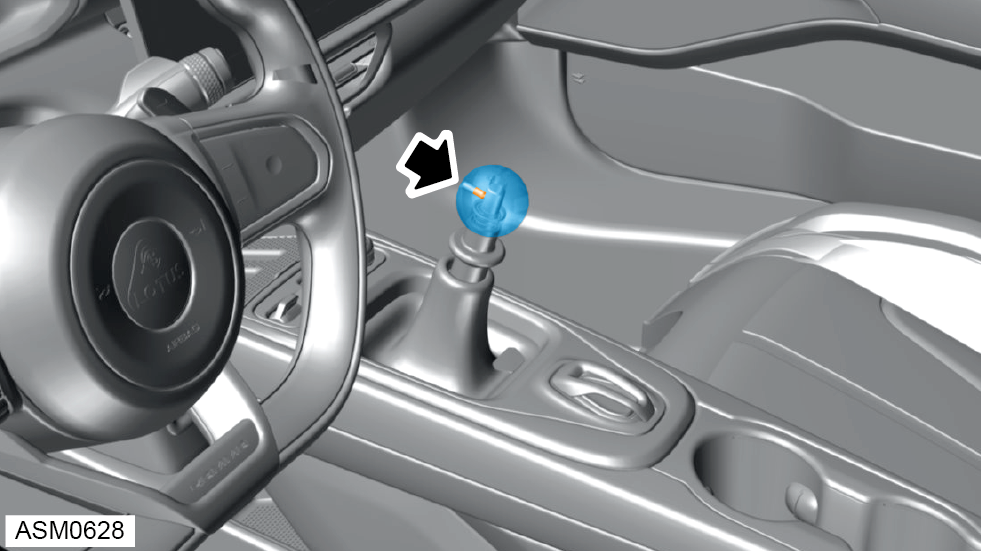
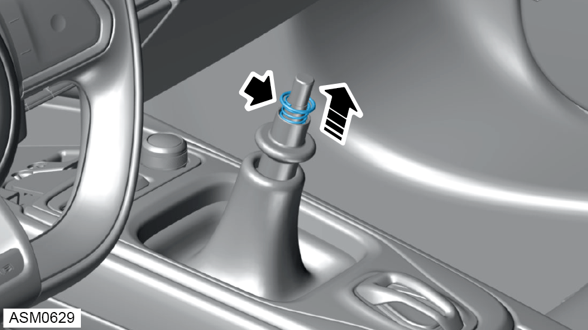

Gear Knob - V6
Print
Operation Code: 47.05.07-02
Removal

- Loosen but do not fully remove M5x16 grub screw securing gear knob to gear lever.
- Remove gear knob.
NOTE: Spring and seal may come away with the gear knob.
Do not carry out further disassembly if removing for access only.

- Remove spring and seal assembly from gear lever.
Installation
- Installation is the reverse of removal procedure except for the following:
- Fully tighten gear knob then loosen until the grub screw is aligned with the slot on the gear lever.